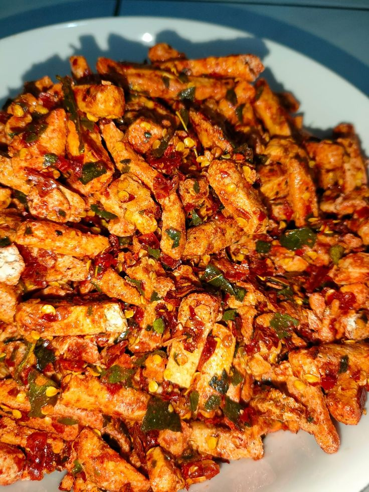
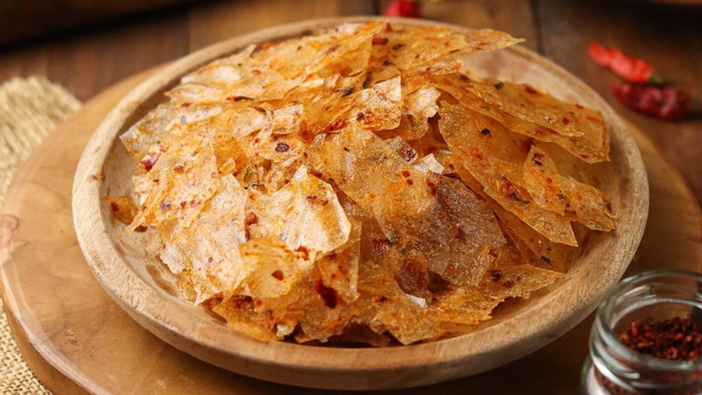
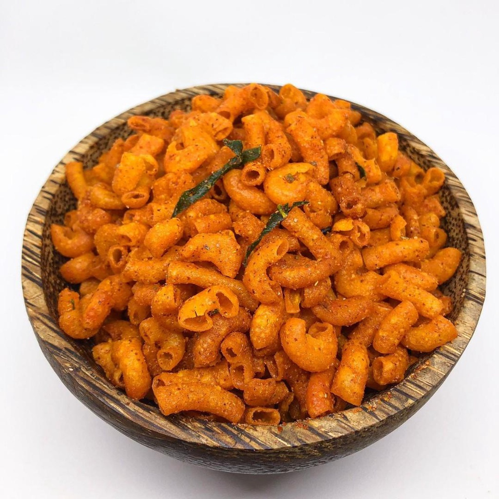

Katalog & Galeri Produk Terpopuler
Pilih camilan kemasan kedap udara favorit Anda di bawah ini, lalu lanjutkan ke panel keranjang untuk memesan langsung melalui WhatsApp resmi Camilan Nusantara.

Basreng Daun Jeruk
Bakso goreng ikan tenggiri renyah berbumbu cabai kering dan daun jeruk segar.
Mulai Rp 8.000

Keripik Kaca Pedas
Olahan tapioka tipis bertekstur kaca super garing dengan bumbu pedas mantap.
Mulai Rp 7.500

Makaroni Pedas Gurih
Makaroni renyah berbumbu rempah daun jeruk, gurih dan tidak keras di lidah.
Rp 14.000 / 250g
Keranjang & Pemesanan WhatsApp 0 item Rp0
Periksa daftar camilan pilihan Anda, lalu lengkapi alamat pengiriman untuk mengirim pesanan ke WhatsApp resmi 0858-0058-9235.
Keranjang pesanan Anda masih kosong.
Silakan pilih produk dan tekan tombol + Tambah ke Pesanan atau + Pesan pada daftar harga.
Total Item: 0 pcs
Total Pesanan: Rp0
Daftar Harga & Komparasi Kemasan
Lihat seluruh 7 varian camilan beserta perbandingan harga eceran, grosir reseller (min. 10 pcs), dan masa simpan melalui panel berikut:
Lihat Tabel Harga Lengkap & Cari Produk (7 Varian)
| Kode | Nama Varian Camilan | Kemasan | Harga Eceran | Harga Grosir (Min 10) | Masa Simpan | Pesan |
|---|---|---|---|---|---|---|
| CN-BS01 | Basreng Daun Jeruk | Pouch 100g | Rp 8.000 | Rp 6.500 | 6 Bulan | |
| CN-BS02 | Basreng Daun Jeruk | Zipper 250g | Rp 18.000 | Rp 15.000 | 8 Bulan | |
| CN-KK01 | Keripik Kaca Pedas | Pouch 100g | Rp 7.500 | Rp 6.000 | 6 Bulan | |
| CN-KK02 | Keripik Kaca Pedas | Zipper 250g | Rp 16.500 | Rp 13.500 | 8 Bulan | |
| CN-MK01 | Makaroni Pedas Daun Jeruk | Zipper 250g | Rp 14.000 | Rp 11.500 | 9 Bulan | |
| CN-US01 | Usus Crispy Gurih | Pouch 150g | Rp 15.000 | Rp 12.000 | 6 Bulan | |
| CN-SB01 | Kerupuk Seblak Kering | Pouch 120g | Rp 10.000 | Rp 8.500 | 6 Bulan |
Varian camilan tidak ditemukan.
Informasi Produk, Alur Pemesanan & Standar Mutu
Pelajari rincian kategori produk, alur belanja eceran/grosir, serta jaminan legalitas P-IRT & Halal pada panel ringkas berikut:
Daftar 6 Kategori Produk Unggulan
- Basreng Daun Jeruk (Signature Dish): Bakso goreng berbahan ikan tenggiri segar yang diiris presisi, digoreng kering tanpa menyerap minyak berlebih, lalu dibalut bumbu cabai rawit kering berpadu aroma daun jeruk purut pilihan.
- Keripik Kaca Ekstra Pedas (Keripik Beling): Olahan tepung tapioka murni yang digiling ekstra tipis dan dipanggang hingga menghasilkan tekstur transparan renyah dengan sensasi cabai rawit merah.
- Makaroni Pedas Renyah & Gurih: Makaroni spiral dan pipa yang dimasak bantet renyah (tidak keras) dengan bumbu keju gurih atau cabai level berjenjang.
- Kerupuk Seblak Kering Pedas: Kerupuk bawang bantet berbumbu seblak khas kencur dan cabai merah yang gurih dan beraroma rempah tradisional.
- Usus Crispy Bumbu Rempah: Usus ayam higienis yang dicelup adonan tepung berbumbu bawang ketumbar, lalu digoreng garing keemasan bebas aroma amis.
- Keripik Tempe Sagu Oven Gurih: Tempe kedelai fermentasi alami berpadu tepung sagu renyah, diiris tipis lalu dipanggang dengan daun bawang dan kaldu nabati.
Alur Tata Cara Pemesanan Eceran & Grosir (5 Langkah)
- Memilih Produk & Varian: Tentukan varian bumbu dan kemasan dari galeri atau tabel harga, lalu klik + Tambah ke Pesanan.
- Mengatur Kuantitas: Sesuaikan jumlah pesanan eceran maupun grosir (min. 10 pcs untuk tarif grosir) pada panel keranjang.
- Checkout ke WhatsApp: Lengkapi nama, nomor telepon, dan alamat pengiriman pada panel keranjang, lalu klik Pesan via WhatsApp.
- Kirim & Konfirmasi Manual: Tekan tombol Kirim di aplikasi WhatsApp, kemudian konfirmasi status pengiriman saat kembali ke website.
- Verifikasi, Pengemasan & Pengiriman: Admin memverifikasi stok serta ongkos kirim, lalu mengemas pesanan dengan bubble wrap dan kardus tebal.
Spesifikasi Mutu, Legalitas P-IRT & Komposisi Bahan
- Rincian Komposisi Bahan Utama
- Tepung tapioka berkualitas, daging ikan tenggiri olahan, usus ayam segar, kedelai pilihan, cabai rawit merah kering giling, bawang putih, garam beryodium, penyedap rasa alami, minyak kelapa sawit bermutu, dan daun jeruk purut.
- Sertifikasi P-IRT & Jaminan Halal
- Seluruh produk memiliki Izin Edar P-IRT resmi Dinas Kesehatan serta Sertifikasi Halal BPJPH.
- Masa Simpan & Ketentuan Kedaluwarsa
- Daya tahan optimal 6 hingga 9 bulan pada suhu ruang kering (25°C - 28°C) dengan segel utuh dan terhindar dari sinar matahari langsung.
- Skala Kepedasan & Sensasi Rasa
- Level 0 (Original Asin Gurih), Level 1 (Pedas Manis Ramah Anak), Level 3 (Pedas Sedang Daun Jeruk), hingga Level 5 (Ekstra Pedas).
Dokumentasi Video Produk & Suasana Ritel
Saksikan video ulasan produk serta dengarkan jingle resmi suasana belanja di gerai Camilan Nusantara:
Video Ulasan & Kemasan Camilan Nusantara